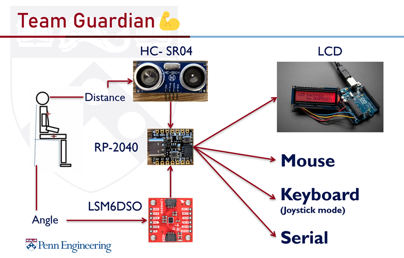
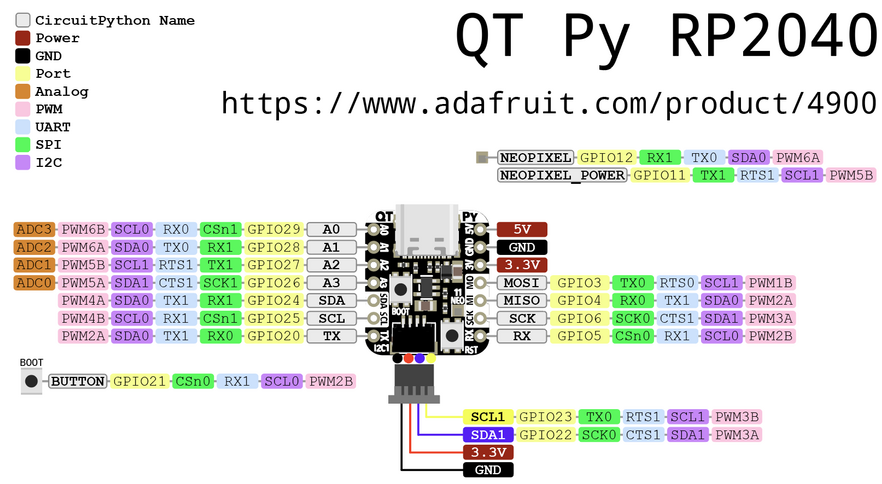
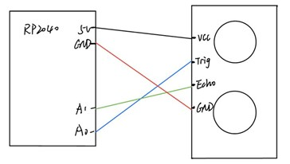

Team Member
"Posture Helper" Intro

As Upenn students, we need to sit in front of the computer every day to complete our assignments. The improper sitting posture and the sedentary lifestyle will affect our health. Therefore, we are going to design a system to remind us to correct our sitting posture and take a break after working for a long time.
Goals
This Microcontroller will serve as:
- Real-time Posture Detector:Help to correct your sitting posture in time;
- Eye-to-screen Distance Monitor: Remind you in time when your eyes are too close to the computer;
- Work-relax Balance Reminder: Remind you to stand up and take a break when sitting for too long;
- We also involve in the Pomodoro Technique as a function to help you work efficiently.
Philosophy
Consider the functionality of the embedded system, we need:
- Readability：The user interface must provides explicit information that lead the users to make proper reaction.
- Timeliness：The information must be provided timely and accurately.
While regarding of the design concepts, we suppose it to have:
- User-friendliness: it is absolutely essential that even the most minimally tech-savvy user feel capable and comfortable setting up and using the posture helper. Therefore the system must provide plenty of intuitive feedback, and must convey the experience of plug-and-play simplicity.
Architecture
Electronics
In this project, two input sensors were used to accomplish the basic function of the sitting posture corrector, they are LSM6DSO and HC-SR04 respectively. Both of them are connected to the RP2040 microcontroller via I2C. A pinout description of RP2040 is shown below.
Qwiic 6DoF (LSM6DSO)
The LSM6DSO is an accelerometer and gyroscope sensor. In order to using the I2C mode, we plug a Qwiic cable between the RP2040 and the Qwiic 6DoF LSM6DSO. For this product, we only need the acceleration input of three different axis (roll, pitch, yaw). The measured data will send to RP2040 through the I2C. When the user’s upper body leans forward, the tilted angle can be calculated by the acceleration. The specific logic is shown here:

Thus we can get the core code of angle calculation:
angle_x = (math.atan(acc_x / (math.sqrt(acc_y * acc_y + acc_z * acc_z)))) * 180.0 / math.pi
angle_y = (math.atan(acc_y / (math.sqrt(acc_x * acc_x + acc_z * acc_z)))) * 180.0 / math.pi
angle_z = (math.atan(acc_z / (math.sqrt(acc_x * acc_x + acc_y * acc_y)))) * 180.0 / math.pi
We choose to use I2C to attach LSM6DSO to RP2040, so we connect LSM6DSO and RP2040 by Qwiic cable like below:

HC-SR04
HC-SR04 is an Ultrasonic Sonar Distance Sensors that can report the range of objects up to 13 feet away. An HC-SR04 ultrasonic distance sensor actually consists of two ultrasonic transducers. One operates as a transmitter that converts the electrical signal into 40 KHz ultrasonic sound pulses, the other operates as a receiver and listens for the transmitted pulses. When the receiver receives these pulses, it produces an output pulse whose width is proportional to the distance of the object in front. Here is the graph of the HC-SR04 wired up to the microcontroller.
Result
b-roll: https://www.youtube.com/watch?v=HWKHhEViY5M Final-Demo: Final Demo Video on Youtube
In the end, we accomplished all the core goals of this project. We used the accelerometer to measure the acceleration of the user’s upper back on the three different axes. Then, we used these input values to calculate the titled angles of the user’s upper back on the three axes. We also used the ultrasonic distance sensor to measure the distance between the user and the computer in front. Combining them, we can judge whether the user’s sitting posture is correct. To enhance user interaction, we use the LCD screen to display reasonable results confronting different sitting postures. If the user is too close to the computer screen, the LCD screen will display “You are too close to the screen!”. If the user has the hunchback posture, the LCD screen will display “Please correct your sitting posture!”. And if the above two situations occur at the same time, the LCD screen will display “Away from the screen, Sit up straight”. We placed all the devices on one posture correction vest. This wearable device can be convenient for the user to check their sitting posture while working.
Furthermore, we have accomplished several of our reach goals. We programmed the RP2040 so that the users' mouse cursor starts shaking when their sitting posture is bad. Because when the users concentrate on work, it is possible to ignore the reminder on the LCD screen. In addition, we designed a "joystick" mode which allows users to control the up, down, left, and right keys of the keyboard by using the vest. Therefore, we can use physical activity instead of a keyboard to play some games. It allows users to exercise to relieve the damage to the waist caused by being sedentary.
Reflection and future work
After six weeks of hard work, we finally completed the sitting posture corrector. This product has fulfilled all the core requirements we set before. Although our group encountered some special situations caused that we don’t have many chances to communicate face to face, we didn’t give up. Starting from the initial idea, we made a relatively complete product step by step. During this process, we generated some new ideas sometimes and judged them from the user’s perspective. From the code writing to the user interaction enhancement, we tried our best efforts to make this project become a usable product that has some potential. Although we came up with some good ideas, we didn’t have enough time to turn them into reality. It was a bit unfortunate, but it was still an enriching experience.
One of the most significant lessons we have been learning is that interaction with the user is important. We originally wanted to use the LED light on the RP2040to warn the user, however, we found that if we wear it on the body, this method cannot effectively attract the user’s attention. So, we used the LCD screen to remind the user when their sitting posture is not standard. But it is still not direct enough, sometimes users will ignore the LCD screen because they are concentrating on their work. Thus, there is a more direct way to interact with the user, such as attaching a small vibrator to the posture-correct vest. And since we used two sensors in this project, we chose to connect RP2040 to the computer via USB to provide electrical power to the sensor. But the wires will make our products look messy and unsightly. So, it would be better to add a battery and hide the wire if possible. Moreover, it is a great idea to add the powerful ESP32 WiFi co-processor to our product, which allows our product to connect to a WiFi network and transfer data from a site. With no time limitation, we want to use more accelerometer and gyroscope sensors to detect more data of user’s arms and legs to achieve pose recognition. This allows us to apply this project to the monitoring of human activity, like an advanced version of smart watch, which may play a great role in health monitoring of people especially the elderly.
Code Repository
https://github.com/AngLi-00/ESE5190-Final-Project/tree/main/code